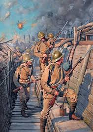

Primeira Guerra Mundial
A Primeira Guerra Mundial, ocorrida entre 1914 e 1918, foi um conflito global que envolveu as principais potências europeias, bem como outros países ao redor do mundo. Este conflito foi desencadeado por uma série de complexas rivalidades políticas, econômicas e territoriais entre as nações europeias. As causas imediatas da guerra incluíram a formação de alianças militares, como a Tríplice Entente (França, Reino Unido e Rússia) e a Tríplice Aliança (Alemanha, Áustria-Hungria e Itália), disputas territoriais nos Bálcãs e a competição colonial entre as potências europeias. O assassinato do arquiduque Francisco Ferdinando da Áustria-Hungria em Sarajevo, em junho de 1914, foi o estopim que desencadeou o conflito, levando a uma escalada rápida de tensões e mobilizações militares. A guerra foi caracterizada por uma brutalidade sem precedentes, com o uso de novas tecnologias militares, como armas químicas, tanques e aviões, resultando em um enorme número de baixas. As trincheiras se tornaram símbolo da guerra de atrito nos fronts ocidental e oriental. Além das batalhas travadas na Europa, a guerra teve repercussões globais, envolvendo colônias e territórios em todo o mundo. Os Estados Unidos entraram na guerra em 1917, alterando significativamente o equilíbrio de poder. A Primeira Guerra Mundial chegou ao fim em 11 de novembro de 1918, com a assinatura do Armistício de Compiègne. O Tratado de Versalhes, assinado em 1919, impôs duras condições à Alemanha derrotada, estabelecendo as bases para ressentimentos que eventualmente contribuíram para o surgimento da Segunda Guerra Mundial. A Primeira Guerra Mundial teve um impacto profundo na geopolítica mundial, alterando drasticamente o mapa político da Europa, contribuindo para o colapso de impérios, como o Austro-Húngaro e o Otomano, e dando origem a novos estados. Além disso, a guerra teve efeitos duradouros na sociedade, na economia e na cultura, moldando o século XX de maneiras que ainda são sentidas hoje.